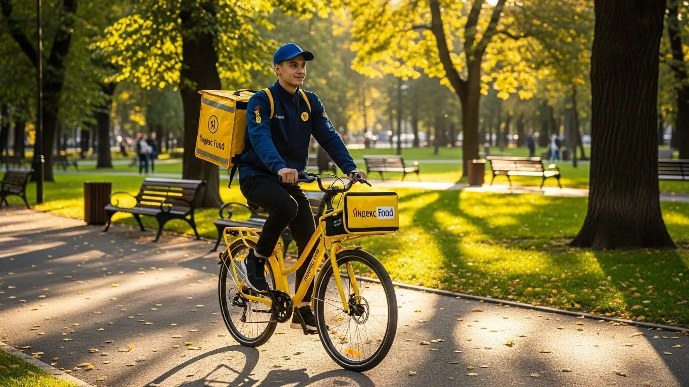

Работа курьером Яндекс Еды в Петрозаводске в 2025-2026 году: доход и условия
- Работа курьером Яндекс Еды в Петрозаводске: для кого эта вакансия и что вы получите
- Сколько вы будете зарабатывать курьером в Петрозаводске: калькулятор дохода и разбор выплат
- Реальный заработок курьера в Петрозаводске: смены и месячный доход
- График работы и форматы занятости
- Требования к кандидату и документы
- Самозанятость, налоги и юридическая чистота
- Пошаговое оформление и первый выход на линию в Петрозаводске
- Пешком, на вело или на авто: что выгоднее в Петрозаводске
- Районы, маршруты и «топовые» зоны заказов в Петрозаводске
- Безопасность, страховка, штрафы и оплата простоя
- Плюсы и возможные минусы работы курьером в Петрозаводске
- Реальные истории и отзывы курьеров из Петрозаводска
- Частые вопросы о работе курьером в Петрозаводске
- Короткие ответы на главные вопросы
- Итоги и ваш следующий шаг
Все города
Думаешь крутить педали или баранку с жёлтым коробом по Петрозаводску и прикидываешь, стоит ли оно того? Сколько реально капает на карту, а не в рекламных обещаниях? Не убьёшь ли свой велосипед или машину по нашим дорогам, стоя в пробках на проспекте Ленина или пытаясь проехать к новостройкам на Древлянке? Если тебя волнуют эти вопросы, ты попал по адресу. Это не очередная статья-близнец с общими фразами. Здесь — вся правда о том, каково это, работать курьером Яндекс Еды именно в нашем городе.
Поверь, работа курьером в Петрозаводске — это не просто «взял заказ — отвёз». Это чистая математика, где из заработка нужно вычесть бензин, налог самозанятого, амортизацию и время. Большинство новичков сливаются в первый же месяц, потому что не учитывают наши карельские реалии: заказ с Кукковки в Центр зимой на велосипеде — это совсем не то же самое, что летом на машине. Незнание районов, «мёртвых» зон и часов пик съедает до 30% потенциального дохода. Если хочешь заранее изучить все детали, включая калькулятор дохода и форму для быстрой заявки, то вся актуальная информация про работу курьером Яндекс Еда в Петрозаводске собрана на официальной странице партнёра.
В этом гиде мы разберём всё по косточкам. Посчитаем, сколько чистыми можно заработать за смену на своих двоих, на велосипеде и на авто. Я покажу на карте, в каких районах Петрозаводска — от Зареки до Перевалки — больше всего заказов и выше коэффициенты. Расскажу, как наша погода — от ледяного дождя до короткого лета — влияет на доход и как к этому подготовиться. И главное — за что реально штрафуют и как этого избежать.
Меня зовут Алексей. Я сам не один год откатал с коробом по Петрозаводску, а сейчас у меня свой небольшой таксопарк-партнёр, так что я знаю всю эту кухню с двух сторон. Никакой рекламной шелухи, только факты и личный опыт. Хватит болтовни, давай по порядку. Сейчас всё разложу по полочкам, чтобы ты принял правильное решение. Но сперва — короткий гид по ключевым темам статьи, чтобы ты сразу сориентировался.
Навигатор по статье: что ты узнаешь про работу в Петрозаводске
В этой статье ты ТОЧНО узнаешь:
- Сколько чистыми можно заработать в Петрозаводске за смену на авто, велосипеде и пешком?
- В каких районах — от Древлянки до Центра — больше всего заказов и выше коэффициенты?
- Как погода, время суток и выбор слота в «Яндекс Про» напрямую влияют на дневной заработок?
- Что выгоднее для Петрозаводска: ходить пешком, крутить педали или работать на своей машине?
- За что реально снижают рейтинг или блокируют, и как этого избежать, чтобы не терять заказы?
- Почему нужно быть самозанятым, сложно ли это оформить и сколько налога придётся платить?
А если тебе некогда читать всю статью — переходи сразу к заключению, где ты найдёшь короткие ответы на все эти вопросы и указания, в каких разделах искать подробности.
А вот наглядная инфографика со средними цифрами по Петрозаводску.
Работа курьером в Петрозаводске: ключевые цифры
Доход в час
350–500 ₽
В часы пик и при высоком спросе
За смену (8 часов)
2800–4000 ₽
Средний заработок за полный день
Чаевые в день
+ 200–450 ₽
Приятный бонус к основному доходу
Гибкий график
от 2 часов
Выбирайте удобные слоты и районы
Работа курьером Яндекс Еды в Петрозаводске: для кого эта вакансия и что вы получите
Давай по-честному разберёмся, для кого эта работа, а кому лучше и не начинать. Вакансия курьера в сервисах Яндекса — это не про «сидеть в офисе с девяти до шести». Это в первую очередь про движение и самостоятельность. Если ты ищешь свободный график и не хочешь зависеть от строгого начальника, то это твой вариант.
Здесь нет жёсткого отбора по дипломам и резюме, начать можно без опыта. Главное — твоё желание работать и наличие смартфона. Поэтому работа курьером отлично подходит как подработка для студентов после пар, для тех, кто временно остался без основной работы или просто хочет иметь дополнительный доход. Водители-курьеры тоже находят здесь своё: доставка на автомобиле открывает доступ к более дорогим и дальним заказам. В общем, если тебе нужны деньги здесь и сейчас и ты готов двигаться — добро пожаловать.

Кому подойдёт эта работа в Петрозаводске
В Петрозаводске эта работа идеально вписывается в жизнь самых разных людей. Во-первых, это студенты местных вузов и колледжей. Гибкие условия работы позволяют легко подстроить график под учёбу: выходить на пару часов после занятий или плотно поработать в выходные. Во-вторых, это люди, которым нужна подработка к основной зарплате. Можно брать вечерние смены или работать по субботам, чтобы закрыть кредит или накопить на что-то.
Также это отличный старт для тех, у кого нет опыта работы. Здесь не спросят про твои прошлые достижения, всему научат в процессе. И, конечно, это вариант для водителей, которые хотят использовать свой автомобиль для заработка, не связываясь с перевозкой пассажиров. Если тебе важен свободный график и возможность получать ежедневные выплаты, а не зарплату раз в месяц, — эта работа для тебя.
Главные преимущества для жителей районов Древлянка, Кукковка, Ключевая
Одно из главных удобств — возможность работать рядом с домом. Тебе не нужно тратить час-полтора на дорогу до работы и обратно через весь Петрозаводск. Живёшь, например, на Древлянке — можешь брать заказы прямо в своём районе. Там хватает и кафе, и магазинов из Яндекс Еды или Доставки, а значит, всегда есть работа.
То же самое касается Кукковки или Ключевой. Это большие спальные районы, где вечером и в выходные всегда высокий спрос на доставку. Ты можешь просто выйти из дома, включить приложение Яндекс Про и через несколько минут уже выполнять первый заказ. Это экономит не только время, но и деньги на проезд, а для курьеров на автомобиле — на бензин. Ты работаешь на знакомой территории, где знаешь каждый двор и подъезд.
Краткое обещание по доходу и условиям
Если говорить о деньгах, то в Петрозаводске курьер может зарабатывать от 2000 до 4500 рублей за смену, в зависимости от способа передвижения и количества часов. При полной занятости месячный доход может доходить до 70 000–90 000 рублей и выше, особенно у водителей-курьеров. Но это не потолок, всё зависит от твоей активности.
Ключевые условия работы просты и понятны: ты работаешь как самозанятый партнёр, что обеспечивает официальный доход. Деньги приходят на карту, причём можно настроить ежедневные выплаты. График полностью свободный — ты сам решаешь, когда и на сколько выходить на линию. Опыт не требуется, начать можно буквально на следующий день после регистрации и короткого онлайн-обучения.
Вот свежий пример. Парень, студент ПетрГУ, живёт в центре. Ему срочно нужны были деньги. Зарегистрировался, получил термокороб, взял в аренду велосипед и вышел на смены по 4–5 часов после учёбы. Работал в основном в центре, где много ресторанов. За первую неделю, работая только по вечерам, он заработал около 10 000 рублей чистыми. Это помогло ему понять, что даже при частичной занятости можно получать неплохой доход, если выбирать правильное время и локации.
В итоге, работа курьером в Петрозаводске — это реальная возможность заработать без начальника и жёсткого графика. Эта вакансия подходит студентам, людям в поиске подработки и тем, кто ценит свободу. Главное преимущество — ты можешь работать в своём районе и получать ежедневные выплаты.
Сколько вы будете зарабатывать курьером в Петрозаводске: калькулятор дохода и разбор выплат
Самый главный вопрос, который всех волнует: «Сколько я буду зарабатывать?». Однозначного ответа нет, потому что твой доход — это не фиксированный оклад. Он складывается из множества факторов, и ты сам можешь на него влиять. Это как конструктор: чем больше деталей соберёшь, тем выше будет итоговая сумма.
Давай подробно разберём, из чего состоит зарплата курьера, как её можно примерно посчитать заранее и какой заработок выходит на практике у пеших, вело- и автокурьеров в нашем Петрозаводске. Понимание этой механики поможет тебе с первого дня работать эффективнее и зарабатывать больше, а не просто кататься по городу в ожидании чуда.
Из чего складывается доход курьера
Твой заработок — это не просто плата за доставку. Он состоит из нескольких частей, которые суммируются в приложении Яндекс Про после каждого заказа.
- Оплата за заказ. Это базовая стоимость за то, что ты забираешь и доставляешь заказ. Она фиксирована для каждого конкретного заказа.
- Доплата за расстояние. Чем дальше нести или везти заказ, тем больше доплата. Система считает оптимальный маршрут и начисляет оплату за каждый километр пути.
- Повышающие коэффициенты. В часы пик (обед, ужин), в плохую погоду (дождь, снегопад) или в районах с высоким спросом на карте появляются зоны с «молниями». Заказы из таких зон оплачиваются дороже — в 1.5, 2, а то и в 3 раза.
- Бонусы. Яндекс часто предлагает персональные цели. Например, выполни 15 заказов за день и получи дополнительно 1000 рублей. Это отличный стимул для активной работы.
- Чаевые. Клиенты могут отблагодарить тебя за хорошую работу через приложение. Вся сумма чаевых идёт тебе, сервис не берёт с них комиссию.
- Оплата простоя. Важный момент: если ты пришёл в ресторан, а заказ ещё не готов, включается платное ожидание. Твоё время — деньги, и сервис это компенсирует.
- Компенсация проезда. На некоторых дальних заказах, особенно для пеших курьеров, может быть предусмотрена компенсация проезда на общественном транспорте.
Как пользоваться калькулятором дохода
Чтобы ты мог прикинуть свой потенциальный заработок ещё до выхода на линию, на сайте есть специальный калькулятор. Пользоваться им просто. Сначала выбираешь свой город — Петрозаводск. Затем указываешь, как планируешь доставлять: пешком, на велосипеде или на личном автомобиле.
Далее выставляешь предполагаемый график: сколько часов в день и сколько дней в неделю ты готов работать. Например, 4 часа в день 5 дней в неделю. На основе этих данных и средней статистики по городу калькулятор покажет тебе примерный диапазон дохода за день и за месяц. Понятно, что это не точная цифра до копейки, а ориентир. Твой реальный заработок будет зависеть от спроса, погоды и твоей скорости, но общее представление калькулятор даёт отличное.
Прикинь свой доход в Петрозаводске
Примерный доход в месяц
72 000 ₽
Расчёт основан на средней ставке для Петрозаводска и не учитывает бонусы, чаевые и повышенные коэффициенты. Твой реальный заработок может быть выше.
Этот калькулятор — отличный ориентир. А если хочешь увидеть полные условия, требования и сразу подать заявку, загляни на официальную страницу — вот работа курьером Яндекс Еда в твоём городе. Там собрана вся актуальная информация.
Примеры расчёта для пешего, вело- и авто‑курьера в Петрозаводске
Давай посмотрим на реальные сценарии для Петрозаводска, чтобы было понятнее.
- Пеший курьер в центре. Допустим, ты работаешь 4–5 часов в день в районе проспекта Ленина и прилегающих улиц. Здесь много кафе, и заказы обычно на короткие расстояния. За счёт плотности заказов можно делать 3–4 доставки в час. В среднем за такую смену выходит 1500–2000 рублей. Если работать 20 дней в месяц, доход составит 30 000–40 000 рублей.
- Велокурьер между спальными районами. Ты работаешь на велосипеде и берёшь заказы на Древлянке и Перевалке. Велосипед позволяет быстро перемещаться между точками, избегая пробок. За 8-часовую смену можно заработать 2500–3500 рублей. При графике 5/2 твой месячный доход может составить 50 000–70 000 рублей.
- Курьер на автомобиле по всему городу. На машине ты можешь брать самые выгодные заказы: доставка из гипермаркетов, большие заказы из ресторанов, доставки в отдалённые районы или даже пригород. В дождливый вечер пятницы с высокими коэффициентами за 8–10 часов можно заработать 4000–5500 рублей. При полной занятости доход водителя-курьера в Петрозаводске может достигать 80 000–100 000 рублей в месяц до вычета расходов на бензин.
Сравнение типов курьеров в Петрозаводске
| Параметр | Пеший курьер | Велокурьер | Курьер на авто |
|---|---|---|---|
| Средний доход в час | 300–450 ₽ | 400–600 ₽ | 500–800 ₽ |
| Лучшие районы | Центр, плотная застройка | Спальные районы (Древлянка, Кукковка, Ключевая) | Весь город, дальние заказы, пригород |
| Расходы | Минимальные (проезд) | Обслуживание велосипеда | Бензин, амортизация |
| Преимущества | Не нужны вложения, фитнес | Скорость, маневренность | Комфорт, самые выгодные заказы |
Как-то раз я сам решил поработать на машине в сильный снегопад, который парализовал город. Включил Яндекс Про и увидел, что весь центр и спальные районы «горят» фиолетовым — коэффициенты были х2.5 и х3. Заказов было море, люди не хотели выходить из дома. Я сосредоточился на доставках из ТРЦ «Лотос Plaza» и «Макси». За 6 часов работы я сделал 14 заказов и заработал почти 6000 рублей. Да, пришлось постоять в пробках, но доход того стоил. Это отличный пример того, как погода и правильный выбор зоны напрямую влияют на итоговую сумму.
В общем, твой заработок в сервисах Яндекса — это гибкая система, которой можно и нужно управлять. Понимая, из чего складывается доход, и используя пиковые часы, бонусы и правильный транспорт, ты сможешь зарабатывать в Петрозаводске достойные деньги. Главный совет: не сиди на месте в ожидании заказов, а перемещайся в зоны с повышенным спросом — приложение Яндекс Про всегда подскажет, где они находятся.

Реальный заработок курьера в Петрозаводске: смены и месячный доход
Давай сразу к главному — к деньгам. Сколько на самом деле можно заработать, доставляя заказы Яндекс Еды в Петрозаводске? Цифры в рекламе — это одно, а реальность на линии — совсем другое. Я не буду обещать золотых гор, а просто разложу по полочкам, из чего складывается доход и на какие суммы можно рассчитывать, если подходить к делу с умом. Заработок — это не лотерея, а результат твоих действий, выбора транспорта и умения работать в правильное время и в правильном месте.
Диапазон дохода для подработки и полной занятости
Суммы напрямую зависят от того, сколько времени ты готов уделять работе и как передвигаешься по городу. В Петрозаводске своя специфика: центр компактный, а спальные районы вроде Древлянки или Кукковки довольно большие, и это нужно учитывать.
Если ты ищешь подработку на 2–4 часа в день, например, после учёбы или основной работы, цифры будут примерно такие. Пеший курьер в центре за короткую смену может сделать 800–1500 рублей. Курьер на велосипеде получится быстрее — уже 1200–2000 рублей. Курьер на автомобиле, особенно если берёт заказы в разные районы, за 4 часа может заработать 1500–2500 рублей уже за вычетом бензина. В месяц на подработке выходит от 15 000 до 40 000 рублей, в зависимости от регулярности выходов и транспорта.
При полной занятости, когда ты работаешь по 8–10 часов в день, доход совсем другой. Пеший курьер стабильно делает 2500–3500 рублей в день, что в месяц даёт 50–70 тысяч. Велокурьер за счёт скорости и манёвренности может зарабатывать 3000–4500 рублей в день или 60–85 тысяч в месяц. Самый высокий доход у водителей-курьеров: 4000–6000 рублей в день — это реальность. В месяц при полной загрузке можно выходить на 80–120 тысяч рублей. Это не потолок, а средние цифры для тех, кто работает системно.
Как район, время суток и погода влияют на доход
Твой заработок — это не просто ставка за час. Он постоянно меняется, и на это влияют три главных фактора: где, когда и в какую погоду ты работаешь. Поняв эту механику, ты сможешь зарабатывать больше, не работая дольше.
Во-первых, район. В центре Петрозаводска, на проспекте Ленина и прилегающих улицах, всегда много заказов из кафе и ресторанов. Но там же и высокая конкуренция. А вот в крупных спальных районах, таких как Древлянка или Перевалка, спрос тоже огромный, особенно на доставку из магазинов. Во-вторых, время. Пиковые часы — это обед с 12:00 до 14:00 и ужин с 18:00 до 21:00. В это время в приложении «Яндекс Про» появляются зоны с повышенным коэффициентом — они окрашиваются в фиолетовый цвет. Работа в такой зоне может удвоить стоимость заказа. Пятница, выходные и праздничные дни — это один сплошной пик.
И, наконец, погода — наш главный союзник в Петрозаводске. Как только начинается дождь, снег или сильный ветер, количество заказов резко взлетает. Люди не хотят выходить из дома, а курьерам за работу в таких условиях сервис начисляет повышенные коэффициенты. Клиенты тоже становятся щедрее на чаевые, понимая, что ты работаешь в непростых условиях.

Советы по увеличению заработка от опытных курьеров
Чтобы не просто работать, а именно зарабатывать, нужно подходить к делу стратегически. Вот несколько проверенных советов от парней из моего парка. Первое — планируй слоты. Самые «денежные» смены — вечерние и в выходные. Старайся бронировать их заранее в приложении.
Второе — изучай карту спроса в «Яндекс Про». Не сиди на одном месте в ожидании заказа. Если видишь, что в соседнем районе «горит» фиолетовая зона, — двигайся туда. Иногда есть смысл проехать 10 минут без заказа, чтобы потом за час сделать в полтора раза больше. Не зацикливайся на центре, в спальниках вроде Кукковки или Ключевой в вечернее время заказов не меньше.
Третье — будь гибким в выборе транспорта. Если у тебя есть и велосипед, и машина, используй их по ситуации. В час пик в центре на велосипеде ты обгонишь любую машину. А вот для дальних доставок на Зареку или Соломенное, особенно в плохую погоду, автомобиль незаменим. Умение комбинировать — ключ к максимальному доходу без переработок.
Вот реальный пример. Один из моих водителей, Сергей, обычно за 8-часовую смену в будний день делал около 4500 рублей. Как-то в пятницу пошёл сильный ливень. Он не остался дома, а вышел на линию и сразу поехал в район Древлянки, где много новостроек. С 18:00 до 22:00 там был огромный спрос и максимальные коэффициенты. За эти 4 часа он сделал почти 3500 рублей. В итоге за день вышло больше 7000, уже за вычетом бензина.
В общем, твой доход в Петрозаводске зависит не от удачи, а от твоего подхода. Анализируй спрос, используй погодные условия и правильно выбирай время и место для работы. Тогда и цифры в приложении будут тебя только радовать.
График работы и форматы занятости
Главный плюс этой работы, о котором все говорят, — свободный график. И это действительно так. Ты сам решаешь, когда выходить на линию, сколько часов работать и когда устраивать себе выходные. Никто не стоит над душой с планом и не отчитывает за опоздания в офис. Но чтобы эта свобода превратилась в стабильный доход, а не в хаос, нужно научиться ей пользоваться. Разберёмся, как это работает на практике для разных людей.
Подработка после учёбы или основной работы
Совмещать доставку с чем-то ещё — самый популярный сценарий. Это идеальный вариант для студентов и тех, у кого уже есть основная работа, но нужны дополнительные деньги. Гибкость графика позволяет встроить смены в любое расписание.
Например, студент ПетрГУ, живущий в общежитии в центре. Он может брать короткие слоты по 3-4 часа после пар, с 18:00 до 22:00, когда самый пик заказов. Плюс выходить на более длинную смену в субботу. Работая на велосипеде в таком режиме, он спокойно зарабатывает 15–20 тысяч в месяц. Этих денег вполне хватает на личные расходы, чтобы не просить у родителей.
Другой пример — сотрудник с одного из наших заводов, который работает по стандартному графику 5/2. Он выходит на линию на своей машине в пятницу вечером и на выходных. Его конёк — доставка крупных заказов из гипермаркетов вроде «Ленты» или «Сигмы» в спальные районы. Такая подработка приносит ему дополнительные 25–30 тысяч в месяц, которые он, например, тратит на погашение кредита за машину.

Полная занятость: как выглядит типичный день курьера
Если рассматривать доставку как основную работу, то день строится вокруг пиков спроса. Это уже не хаотичные выходы, а полноценный рабочий день, просто без начальника. Типичный день курьера на полной занятости в Петрозаводске выглядит примерно так.
Утро начинается не в 8 утра, а ближе к 10–11, когда просыпается город и появляются первые заказы. Курьер открывает «Яндекс Про», смотрит на карту и едет в зону, где ожидается спрос, — обычно это центр или районы рядом с крупными ТРЦ, как «Лотос Plaza». С 12:00 до 15:00 идёт обеденный пик: заказы из ресторанов и кафе идут один за другим, времени на передышку почти нет.
После 15:00 наступает небольшое затишье. В это время можно спокойно пообедать, отдохнуть или сместиться в сторону спальных районов, готовясь к вечеру. С 18:00 до 21:00 — второй, самый мощный пик. Это время ужинов и заказов из магазинов. Работа кипит в густонаселённых районах, вроде Древлянки или Кукковки. После 21:00 спрос постепенно спадает, и к 22–23 часам можно заканчивать смену и ехать домой с хорошим дневным заработком.
Как планировать слоты и выходы через приложение «Яндекс Про»
Приложение «Яндекс Про» — твой главный рабочий инструмент. Именно через него ты управляешь своим графиком. В приложении есть раздел со слотами — это запланированные отрезки времени, в которые ты обязуешься быть на линии в определённом районе. Можно выбирать свободные слоты, которые длятся от 2 до 12 часов, или планировать их на неделю вперёд. Чем раньше планируешь, тем больше выбор.
Планирование важно, потому что за выход на запланированный слот сервис часто даёт бонусы. Кроме того, это дисциплинирует. Когда у тебя есть чёткий план на неделю, твой доход становится стабильнее. При выборе слота ты сразу видишь район, в котором нужно будет работать. Перед началом смены лучше приехать в эту зону заранее, минут за 10, чтобы без спешки выйти на линию.
Опаздывать на слот или пропускать его без уважительной причины не стоит. Это влияет на твой рейтинг и уровень приоритета в системе. Чем выше твой рейтинг, тем больше заказов ты получаешь, особенно в часы высокого спроса. Поэтому пунктуальность и ответственность — это не просто слова, а прямой путь к увеличению твоего дохода.
Был у меня в парке новичок, который поначалу выходил на линию как придётся, часто опаздывал на слоты и удивлялся, почему заработок такой низкий. Я ему посоветовал сесть в воскресенье и распланировать всю следующую неделю: забронировать самые выгодные вечерние слоты и пару утренних. Он начал приезжать в зону заранее и относиться к этому как к настоящей работе. Уже через две недели его средний дневной доход вырос почти вдвое.
В итоге, свободный график — это не анархия, а инструмент. Если научиться им пользоваться через «Яндекс Про», планировать своё время и ответственно подходить к сменам, то работа курьером будет приносить стабильный и предсказуемый доход.
Требования к кандидату и документы
Многих новичков пугают строгие требования и возможная бумажная волокита. На деле всё гораздо проще, чем кажется. Сервис заинтересован в том, чтобы на линию выходило больше толковых курьеров, поэтому процесс максимально упростили. Главное — твоё желание работать, а с формальностями разберёмся. Давай по порядку, что от тебя потребуется.
Возраст, гражданство и базовые условия
Начну с главного — возраст. Работать курьером в Яндекс Еде можно строго с 18 лет. Никаких исключений, даже с согласия родителей, здесь нет. Это связано с материальной ответственностью и юридическим статусом, необходимым для оформления. По гражданству тоже всё чётко: нужен паспорт гражданина России или одной из стран ЕАЭС (Беларусь, Казахстан, Армения, Киргизия).
Что касается физической формы, от тебя не требуют олимпийских рекордов. Если ты пеший курьер, будь готов много ходить. В Петрозаводске рельеф в основном ровный, но расстояния бывают приличные, особенно если работаешь в районах вроде Древлянки. Велокурьеру, само собой, нужно уверенно держаться в седле и не бояться городского трафика. Для водителя-курьера главное — стаж и аккуратное вождение. В целом, если у тебя нет серьёзных проблем со здоровьем, которые мешают активно двигаться, ты справишься.
Какие документы нужны для работы курьером
Чтобы не затягивать с оформлением, подготовь всё заранее. Список короткий, и большинство документов у тебя уже есть под рукой. Для работы курьером понадобятся:
- Паспорт. Основной документ, без него никуда. Нужен для подтверждения личности и возраста.
- ИНН (Идентификационный номер налогоплательщика). Он необходим для регистрации в качестве самозанятого. Если не помнишь свой номер или потерял свидетельство, не беда — его можно за пару минут узнать на сайте налоговой службы по паспортным данным.
- Банковская карта. Любая карта российского банка (МИР, Visa, Mastercard), оформленная на твоё имя. На неё будут приходить ежедневные выплаты. Карта родственников или друзей не подойдёт.
- Медицинская книжка. Для доставки заказов из ресторанов и продуктовых магазинов она часто является обязательным требованием. Если у тебя её нет, лучше сделать. В Петрозаводске это можно сделать в любом аккредитованном медцентре. Наличие медкнижки расширит для тебя количество доступных заказов.
Как видишь, ничего сверхъестественного. Это стандартный набор для любого официального оформления. Подготовь эти документы, и процесс регистрации пройдёт гладко и быстро.
Можно ли работать с 16 лет и какие есть альтернативы
Часто спрашивают, можно ли устроиться в Яндекс Еду с 16 или 17 лет. Отвечаю честно: нет, нельзя. Минимальный порог — 18 полных лет. Это не прихоть компании, а требование законодательства, связанное с полной дееспособностью, возможностью оформить самозанятость и нести ответственность за доставляемые товары.
Если тебе ещё нет 18, а подзаработать хочется, не стоит отчаиваться. В Петрозаводске есть другие варианты подработки для подростков. Например, можно устроиться на раздачу листовок у ТРЦ «Лотос Plaza» или «Тетрис», поработать помощником в небольших семейных кафе или поискать сезонные вакансии, связанные с благоустройством города. Это, конечно, не так гибко, как работа курьером, но вполне легальный способ получить первый рабочий опыт и карманные деньги, пока ждёшь совершеннолетия.
Из практики: у меня был случай с парнем, студентом ПетрГУ. Ему как раз исполнилось 18, и он решил подрабатывать курьером. Собрал все документы, а вот ИНН найти не смог — бумажка где-то затерялась. Он уже расстроился, думал, придётся идти в налоговую, терять время. Я ему подсказал зайти на сайт ФНС. Через пять минут он уже вбил свой номер в анкету и в тот же день закончил регистрацию. На следующий день вышел на свою первую смену в центре.
Краткий вывод: Основные требования к курьеру — это совершеннолетие, гражданство РФ или ЕАЭС и стандартный пакет документов. Никаких завышенных ожиданий к кандидатам нет. Мой совет: перед заполнением анкеты просто проверь, все ли документы у тебя на руках и не истёк ли их срок действия. Это сэкономит тебе время и нервы.
Самозанятость, налоги и юридическая чистота
Теперь про юридические моменты. Многих пугают слова «самозанятость» и «налоги». Кажется, что это сложно, муторно и связано с кучей бумаг. На самом деле, это самый простой и прозрачный способ работать на себя и получать официальный доход. Система создана как раз для таких, как мы — курьеров, таксистов, фрилансеров. Забудь про бухгалтеров и очереди в налоговой, всё делается через смартфон за пару кликов.
Почему курьеры Яндекс Еды работают как самозанятые
Работа через самозанятость (официально это называется налог на профессиональный доход или НПД) — это стандарт для сотрудничества с Яндексом. Это не трудовой договор, а партнёрские отношения, которые выгодны и тебе, и сервису.
Для тебя главные плюсы такие:
- Официальный доход. Все твои заработки — «белые». Ты можешь взять кредит в банке или получить визу, подтвердив свой доход справкой из приложения.
- Простота. Никакой сложной бухгалтерии. Приложение «Мой налог» само формирует чеки и считает налог. Тебе не нужно вести отчётность.
- Низкая налоговая ставка. Ты платишь всего 6% с дохода, полученного от юридического лица (Яндекса). Это значительно меньше, чем 13% НДФЛ при работе по трудовому договору.
- Легальность. Ты работаешь честно, не боясь никаких проверок. Это даёт уверенность и спокойствие, в отличие от «серых» схем.
По сути, самозанятость — это твой способ легализовать подработку без лишней головной боли. Ты сам себе начальник, но при этом работаешь в рамках закона.
Как за 10 минут оформить самозанятость через «Мой налог»
Регистрация статуса самозанятого занимает меньше времени, чем заварить кофе. Всё делается онлайн, никуда ходить не нужно. Вот простая пошаговая схема:
- Скачай приложение. Найди в Google Play или App Store официальное приложение ФНС России — «Мой налог».
- Начни регистрацию. Открой приложение и выбери самый простой способ — «Регистрация по паспорту РФ».
- Отсканируй паспорт. Наведи камеру телефона на главный разворот паспорта. Приложение само распознает все данные. Проверь, чтобы всё было верно.
- Сделай селфи. Приложение попросит тебя сфотографироваться. Это нужно для подтверждения личности, чтобы никто не смог зарегистрироваться по твоему паспорту.
- Подтверди регистрацию. Выбери свой регион — Республика Карелия. После этого нажми кнопку «Подтверждаю». Всё, ты официально стал самозанятым.
Весь процесс полностью автоматизирован. После этого останется только привязать свой статус в приложении Яндекс Про, и система будет работать автоматически.
Сколько и как платить налоги
Теперь о самом важном — о деньгах. Как самозанятый, ты платишь налог только с фактического дохода. Нет заработка — нет налога. Ставка налога для самозанятых при работе с Яндекс Едой составляет 6%, так как ты получаешь доход от организации.
Процесс уплаты устроен максимально просто, чтобы ты не отвлекался от работы:
- Яндекс Про после каждой выплаты автоматически передаёт данные о твоём доходе в налоговую.
- Приложение «Мой налог» само формирует чеки и рассчитывает сумму налога за прошедший месяц.
- До 12-го числа следующего месяца ты получаешь в приложении уведомление с итоговой суммой.
- Оплатить налог нужно до 28-го числа. Это можно сделать прямо в приложении, привязав банковскую карту. Одна кнопка — и готово.
Это гораздо проще и безопаснее, чем работать неофициально. За небольшой процент ты получаешь легальный статус, официальный доход и полное отсутствие проблем с налоговой.
У меня в таксопарке работает водитель, ему под 50, всю жизнь мотался по стройкам в Петрозаводске, получал «серую» зарплату. Когда решил пойти в доставку, больше всего боялся этой «самозанятости». Думал, это как открыть ИП, с отчётами и декларациями. Я сел с ним, и мы вместе за 10 минут зарегистрировали его через «Мой налог». Когда в следующем месяце ему пришёл налог — около 2000 рублей с его подработки — и он оплатил его одной кнопкой, он был в шоке, насколько всё просто. Говорит, впервые в жизни чувствует себя спокойно, зная, что работает честно.
Краткий вывод: Самозанятость — это не страшно, а удобно. Это современный и законный формат работы с низкой налоговой ставкой и автоматизированной отчётностью. Мой совет: не ищи обходных путей. Потрать 10 минут на оформление, и ты получишь официальный доход, спокойствие и все преимущества легальной работы.
Пошаговое оформление и первый выход на линию в Петрозаводске
Многие думают, что устроиться курьером — это долго и муторно, с кучей бумажек и собеседований. На деле всё гораздо проще и быстрее, особенно если делать всё по шагам. Весь процесс от анкеты до первого заработка занимает от нескольких часов до одного дня. Главные требования — иметь под рукой нужные документы и смартфон, опыт работы не нужен.
Вся процедура полностью дистанционная, ни в какой офис в Петрозаводске ехать не придётся. Ты заполняешь анкету, смотришь короткое видео, проходишь тест и получаешь доступ к заказам. Система сделана так, чтобы убрать все лишние барьеры и позволить тебе начать зарабатывать как можно скорее. Это не трудоустройство в госкорпорацию, здесь ценят твоё время.
Из практики: у меня был парень, который утром в понедельник заполнил анкету, пока пил кофе. К обеду он уже прошёл обучение, тесты и оформил самозанятость через приложение — это обязательное условие. Вечером того же дня он уже взял свой первый слот в районе Древлянка, выполнил 5 заказов и заработал первые 1200 рублей. Никакой бюрократии, всё чётко и по делу.
В общем, процесс максимально упрощён. Если у тебя заранее готовы паспорт, ИНН, СНИЛС и реквизиты карты, то от момента нажатия кнопки «Отправить анкету» до первых денег на счёте могут пройти буквально часы. А благодаря ежедневным выплатам долго ждать зарплаты не придётся.
Шаг 1–2: анкета и онлайн‑обучение
Первый этап — это простая анкета на сайте. Ничего сложного: ФИО, дата рождения, номер телефона, гражданство. Никто не будет спрашивать про твой предыдущий опыт или требовать резюме. Главное — внимательно и без ошибок ввести свои данные, чтобы потом не было проблем с документами и выплатами. После отправки анкеты система проверит информацию, это обычно занимает от 15 минут до часа.
Как только твои данные подтвердят, тебе откроется доступ к короткому онлайн-обучению. Это не лекции в университете, а несколько коротких видеороликов. В них по делу рассказывают об основах: как пользоваться приложением «Яндекс Про», как правильно общаться с клиентами и сотрудниками ресторанов, что делать в нестандартных ситуациях и какие есть стандарты сервиса. В конце будет небольшой тест из нескольких вопросов, чтобы убедиться, что ты всё понял. Пройти его несложно, если смотрел внимательно.
Шаг 3: получение сумки и доступа к заказам в Петрозаводске
После успешного прохождения теста остаётся последний шаг перед выходом на линию — получить экипировку. Главный рабочий инструмент курьера — это фирменная термосумка или термокороб. Без неё работать нельзя, так как она сохраняет температуру заказов, будь то горячая пицца или холодное мороженое. Это одно из ключевых условий работы.
В Петрозаводске получить сумку можно через курьерских партнёров или в специальных центрах выдачи. Конкретные адреса и время работы этих точек появятся у тебя прямо в приложении «Яндекс Про» после завершения обучения. Не нужно ничего искать в интернете или спрашивать у знакомых. Система сама покажет ближайший к тебе вариант. Как только ты заберёшь сумку и активируешь её в приложении, тебе сразу откроется доступ к заказам.
Шаг 4: первый слот и первый доход
Итак, сумка у тебя, приложение установлено, доступ к заказам открыт. Теперь ты полноценный курьер и можешь начинать зарабатывать. Заходишь в «Яндекс Про», открываешь расписание и выбираешь свой первый слот. Слот — это временной промежуток, в который ты будешь выполнять доставки. Ты сам решаешь, когда и на сколько выходить — это и есть свободный график.
Для первого раза советую выбрать знакомый район, например, тот, где живёшь. Так будет спокойнее: ты знаешь все дворы и короткие пути. Выбираешь на карте нужную зону в Петрозаводске, бронируешь слот, и в назначенное время выходишь на линию. Приложение сразу начнёт предлагать тебе заказы. Принял, забрал, отвёз, получил деньги. Первые заработанные средства поступят на твою карту уже в этот же или на следующий день.

Пешком, на вело или на авто: что выгоднее в Петрозаводске
Выбор транспорта — ключевой момент, который напрямую влияет на твой доход, усталость и удовольствие от работы. В Петрозаводске у каждого формата есть свои плюсы и свои зоны, где он показывает себя лучше всего. Нельзя однозначно сказать, что «авто — это топ, а пешком — для новичков». Всё зависит от твоих целей, физической формы и того, где ты планируешь работать.
Кто-то ценит свободу и не хочет тратиться на бензин, выбирая велосипед. Другому важен комфорт и возможность брать дальние заказы в любую погоду, поэтому он работает на машине. А третий живёт в самом центре и ему проще и быстрее доставлять пешком в радиусе пары километров, чем искать парковку. Прежде чем принимать решение, трезво оцени свои возможности и особенности районов Петрозаводска.
Из практики: один мой знакомый студент начинал пешим курьером в Центре. Зарабатывал немного, но на карманные расходы хватало. Через пару месяцев он купил недорогой велосипед и переключился на спальные районы — Древлянку и Кукковку. Его доход вырос почти в полтора раза, потому что он стал успевать делать больше заказов на средние дистанции. А зимой, когда на велосипеде уже некомфортно, он иногда берёт машину у отца и выполняет заказы по всему городу, зарабатывая в снегопады максимальные суммы.
Сравнение форматов доставки в Петрозаводске
| Параметр | Пеший курьер | Велокурьер | Водитель-курьер |
|---|---|---|---|
| Лучшие районы | Центр, Голиковка (плотная застройка) | Древлянка, Кукковка, Перевалка (спальные районы) | Весь город, пригороды (Соломенное, Шуя) |
| Средний доход | Низкий | Средний | Высокий |
| Расходы | Минимальные (удобная обувь) | Низкие (обслуживание велосипеда) | Высокие (бензин, амортизация) |
| Плюсы | Нет затрат, фитнес, простота старта | Скорость, маневренность, экономия | Комфорт, большие заказы, работа в любую погоду |
| Минусы | Низкая скорость, усталость, зависимость от погоды | Физическая нагрузка, сезонность | Пробки, расходы на авто, поиск парковки |
В итоге, выбор транспорта — это баланс между потенциальным доходом и твоими личными ресурсами. Если у тебя нет машины, не стоит отчаиваться — на велосипеде в Петрозаводске можно зарабатывать очень достойно. Главный совет: начни с того, что тебе доступно, а дальше уже посмотришь, стоит ли вкладываться в другой вид транспорта.
Пеший курьер: для центра и плотной застройки в Петрозаводске
Формат пешего курьера идеально подходит для исторического центра Петрозаводска. В районах, прилегающих к проспекту Ленина, улице Андропова и набережной, очень много кафе и ресторанов. При этом жилые дома и офисы находятся в шаговой доступности. Расстояния между точками А и Б часто не превышают 1–1,5 км. На машине здесь только потеряешь время в поисках парковки, а пешком — быстро и эффективно.
Кроме того, пешая доставка — это отличный вариант для старта, если у тебя нет велосипеда или машины и ты не хочешь никаких вложений. Всё, что нужно — удобная обувь и желание двигаться. Это также хороший выбор для подработки на несколько часов в день. Можно выйти на смену в обеденный перерыв или вечером, прогуляться по центру, выполнить несколько заказов и заработать.
Велокурьер: быстрые доставки между спальными районами
Велосипед — это золотая середина между скоростью и затратами. Для Петрозаводска это один из самых эффективных способов доставки, особенно в крупных спальных районах, таких как Древлянка и Кукковка. Здесь расстояния уже больше, чем в центре, и пешком их покрывать долго. Велосипед же позволяет быстро перемещаться между микрорайонами, срезать путь через парки и дворы, игнорируя пробки на Лесном проспекте или улице Ровио.
Работа велокурьером — это, по сути, оплачиваемый фитнес. Ты постоянно в движении, дышишь свежим воздухом и при этом зарабатываешь. Велосипед даёт возможность брать больше заказов за смену, чем пеший курьер, а значит, и твой итоговый доход будет выше. Главное — подготовить велосипед к работе и позаботиться о своей безопасности на дороге.
Водитель-курьер: заказы по всему городу и пригороду Соломенное, Шуя
Работа на собственном автомобиле — это путь к максимальному заработку. Водитель-курьер не ограничен одним районом и может выполнять заказы по всему Петрозаводску и даже в пригородах, например, отвозить большие заказы из гипермаркетов в Соломенное или дачные посёлки в сторону Шуи. Такие дальние доставки оплачиваются значительно выше.
Автомобиль даёт ключевые преимущества: комфорт, независимость от погоды (что в Карелии особенно актуально) и возможность перевозить тяжёлые или объёмные заказы. В часы пик, в сильный дождь или снегопад количество заказов резко возрастает, а коэффициенты оплаты увеличиваются. Именно в таких условиях водители-курьеры получают самую высокую зарплату. Да, есть расходы на бензин и обслуживание машины, но при грамотном подходе они с лихвой окупаются высоким доходом.
Районы, маршруты и «топовые» зоны заказов в Петрозаводске
Чтобы в Петрозаводске стабильно зарабатывать курьером, мало просто быстро ездить. Главное — понимать, где и когда появляются заказы. Город у нас не миллионник, но со своими «рыбными местами». Если работать с головой, можно получать отличный доход, не наматывая лишние километры. Вся суть в том, чтобы быть в нужное время в нужном месте, а не гоняться за одним заказом через весь город.
Карта в приложении «Яндекс Про» — ваш главный инструмент. Она подсвечивает зоны повышенного спроса, где действуют повышающие коэффициенты. Чем ярче цвет зоны (от зелёного к фиолетовому), тем выше доплата к каждому заказу. Ваша задача — научиться читать эту карту и прогнозировать, где спрос вот-вот вырастет.
Где больше всего заказов: ТРЦ, бизнес‑центры и туристические места
Самые прибыльные зоны, где заказы идут почти непрерывным потоком, — это, конечно, крупные торговые центры и центральные улицы. В обеденное время (с 12:00 до 15:00) и вечером (с 18:00 до 21:00) здесь всегда ажиотаж. Люди в офисах заказывают ланчи, а вечером — ужины домой. В выходные спрос высокий практически весь день.
Ключевые точки в Петрозаводске — это ТРЦ «Лотос Plaza» на Лесном проспекте и ТРЦ «Макси» на проспекте Ленина. Там сосредоточены фуд-корты и рестораны, которые генерируют массу заказов для Яндекс Еды. Также стабильно высокий спрос в центре города: проспект Ленина, проспект Карла Маркса, улица Андропова. Летом к этому списку добавляется Онежская набережная с её многочисленными кафе. Именно в этих зонах чаще всего и появляются «фиолетовые» коэффициенты, которые могут удвоить стоимость заказа.
Работа в своём районе: примеры для популярных жилых кварталов
Гоняться за заказами в центр не всегда самая выгодная стратегия, особенно если вы живёте на окраине. Топливо, время, пробки — всё это съедает ваш доход. Куда умнее освоить свой собственный район. Поверьте, заработок там не меньше, если знать, как работать. В крупных спальных районах тоже полно кафе, суши-баров, пиццерий и магазинов, откуда люди постоянно заказывают доставку.
Например, на Древлянке или Кукковке можно отлично зарабатывать, практически не выезжая за их пределы. Здесь много многоэтажек, а значит, высокая плотность клиентов. Заказы могут быть и не такими дорогими, как из центрального ресторана, но их много, и они короткие. Пока кто-то везёт один заказ с Ленина на Ключевую, вы успеваете сделать три-четыре доставки по своей же Древлянке. То же самое касается районов Перевалка и Зарека. Главное преимущество — вы знаете каждый двор и каждый подъезд, где срезать путь, и тратите минимум времени на поиск адреса.
Как выбирать зоны и слоты в «Яндекс Про», чтобы не мотаться впустую
Приложение «Яндекс Про» — ваш штурман и финансовый аналитик в одном лице. Чтобы не кататься порожняком, научитесь им пользоваться. Основное правило: всегда смотрите на карту спроса перед выходом на линию и в процессе работы. Видите, что соседний район «покраснел»? Если вы рядом, есть смысл сместиться туда. Но не стоит лететь через весь город за одним коэффициентом — пока доедете, он может и пропасть.
Лучшая тактика — выбирать плановые слоты в зонах, где вы знаете, что будет спрос. Например, берёте слот в центре с 12 до 16 — попадёте на бизнес-ланчи. Берёте слот в своём спальном районе с 19 до 23 — будете развозить ужины и заказы из магазинов. Плановый слот даёт приоритет в заказах и гарантирует минимальный доход, даже если их будет мало. И старайтесь выстраивать «цепочки заказов»: когда вы отвозите заказ, система уже ищет для вас следующий рядом с точкой выгрузки. Это самый эффективный способ работы, который экономит и время, и бензин.
Из практики: один курьер-новичок поначалу постоянно гонялся за «фиолетовыми» зонами. Увидит кэф 2.0 на Кукковке, летит туда с Древлянки. Пока доехал, заказ уже отдали другому. В итоге за 4 часа — три заказа и куча сожжённого бензина. Я ему посоветовал взять плановый слот на своей Древлянке и просто работать в радиусе пары километров. В итоге за те же 4 часа он спокойно сделал 10 коротких заказов и заработал почти вдвое больше, потому что не тратил время на пустые перегоны.
Сравнение зон для работы в Петрозаводске
| Параметр | Центр города (пр. Ленина, ТРЦ) | Спальный район (Древлянка, Кукковка) |
|---|---|---|
| Плотность заказов | Очень высокая в пиковые часы | Стабильная, особенно по вечерам и в выходные |
| Средний чек и чаевые | Выше (рестораны, офисы) | Средний (пицца, суши, магазины) |
| Конкуренция | Высокая, много курьеров | Умеренная |
| Сложность (парковка, трафик) | Высокая, пробки и проблемы с парковкой | Низкая, свободные дворы |
| Лучше всего подходит | Пешим и велокурьерам (короткие дистанции) | Вело- и автокурьерам (быстрые доставки по району) |
В общем, ключ к хорошему заработку в Петрозаводске — это знание города и грамотное планирование. Необязательно всегда быть в центре событий, чтобы хорошо зарабатывать. Иногда самый прибыльный маршрут — это маршрут по соседним улицам вашего района. Начинайте со знакомых мест, изучайте спрос, и постепенно вы поймёте, где и когда выгоднее всего работать.
Безопасность, страховка, штрафы и оплата простоя
Работа курьером, как и любая работа «в полях», связана с определёнными рисками. Вы постоянно в движении, на дороге, общаетесь с разными людьми. Поэтому важно говорить не только о деньгах, но и о том, как защитить себя и свой доход. Яндекс в этом плане даёт серьёзную поддержку, но и от вас требуется ответственность и соблюдение правил. Давай по-честному разберём, что к чему.
Это не для того, чтобы вас напугать, а наоборот — чтобы вы чувствовали себя уверенно. Когда знаешь правила игры, работать становится проще и безопаснее. Здесь всё по-взрослому: есть и страхование, и стандарты сервиса, и система мотивации.
Бесплатная страховка на сменах и что она покрывает
Это один из самых важных моментов, о котором многие новички даже не знают. Когда вы находитесь на активном заказе или на плановом слоте, ваша жизнь и здоровье застрахованы. Это абсолютно бесплатно, все расходы берёт на себя сервис. Страховка покрывает несчастные случаи, которые могут произойти во время работы.
Например, если велокурьер попадёт в ДТП и сломает руку, страховка покроет расходы на лечение. Или если пеший курьер поскользнётся зимой и получит травму — это тоже страховой случай. Сумма покрытия доходит до 2 миллионов рублей, что является серьёзной финансовой подушкой безопасности. Главное — в случае чего сразу же сообщить о происшествии в службу поддержки через «Яндекс Про», они дадут чёткую инструкцию. Это даёт уверенность, что вы не останетесь с проблемой один на один.
Правила безопасности на дороге и при доставке
Страховка — это хорошо, но лучше до страховых случаев не доводить. Элементарные правила безопасности сэкономят вам и здоровье, и нервы, и деньги. Для каждого типа курьера они свои, но суть одна — будьте внимательны и предсказуемы.
- Для пеших курьеров: всегда переходите дорогу по пешеходному переходу, даже если торопитесь. Во дворах смотрите по сторонам — машины могут выезжать внезапно. В тёмное время суток носите одежду со светоотражающими элементами.
- Для велокурьеров: шлем — ваш лучший друг. Обязательно используйте фонари и катафоты ночью. Не слушайте музыку в обоих наушниках, вы должны слышать, что происходит вокруг. На дорогах Петрозаводска будьте особенно аккуратны, не все водители привыкли к велосипедистам.
- Для автокурьеров: не гоняйте. Лишние 5 минут не стоят риска ДТП. Всегда паркуйтесь по правилам, чтобы не получить штраф и не мешать другим. Не оставляйте машину открытой с ключами в зажигании, даже если выходите «на секундочку».
И общие правила для всех: аккуратно обращайтесь с заказом. Супы не взбалтывать, пиццу не переворачивать. Используйте термосумку или термокороб, чтобы еда доехала до клиента в нужном состоянии. Будьте вежливы и с сотрудниками ресторана, и с клиентами — это напрямую влияет на ваш рейтинг и чаевые.
Какие бывают штрафы и как их избежать
Давай называть вещи своими именами. В Яндексе нет системы штрафов в привычном понимании. Но есть система мотивации и стандарты качества. Если вы систематически нарушаете правила, ваш рейтинг падает, а это может привести к временной или постоянной блокировке доступа к заказам. По сути, это и есть «штраф».
Основные причины, по которым могут понизить рейтинг или заблокировать:
- Регулярные опоздания. Если вы постоянно забираете или доставляете заказы позже указанного времени без уважительной причины.
- Порча или утеря заказа. Если клиент получает мятую пиццу, пролитый кофе или вообще не получает свой заказ.
- Грубость. Хамство клиенту, сотруднику ресторана или службе поддержки — это прямой путь к блокировке.
- Мошенничество. Любые попытки обмануть систему, например, использование фейковых GPS-данных.
Как этого избежать? Очень просто: работайте честно и на совесть. Если опаздываете из-за пробки — напишите в поддержку. Если ресторан долго готовит заказ — отметьте это в приложении. Если возникла проблема с клиентом — не вступайте в конфликт, а сразу свяжитесь с поддержкой. Адекватное и профессиональное поведение — лучшая защита от любых санкций.
Что такое оплата простоя и как она защищает ваш доход
А вот это — ключевое преимущество, которое многие недооценивают. «Оплата простоя» — это ваша финансовая страховка от отсутствия заказов. Работает она на плановых слотах. Представьте, вы запланировали работать с 18:00 до 22:00 в определённом районе, вышли на линию, а заказов по какой-то причине мало. В большинстве других сервисов это означало бы, что вы просто потеряли время и ничего не заработали.
В Яндекс Еде всё иначе. Если вы находитесь в нужной зоне в своё время, но заказов нет, сервис начисляет вам минимальную гарантированную оплату за это время. То есть, ваше время не пропадает даром. Это защищает ваш доход и делает заработок более предсказуемым. Вы можете быть уверены, что если выделили время на работу, то точно получите за него деньги. Это особенно важно для тех, для кого работа курьером — основной источник дохода.
Был случай с парнем, который работал на машине. Взял вечерний слот, а в городе начался ледяной дождь, все дороги встали. Заказов было море, но передвигаться было почти нереально. Он сделал один заказ за полтора часа. В другой службе он бы получил копейки. А здесь ему посчитали гарантированный доход за слот, и в итоге он получил достойную оплату, которая компенсировала его время и нервы.
Итак, главное, что нужно понять: сервис предоставляет инструменты для защиты вашего здоровья и дохода. Ваша задача — пользоваться ими с умом и соблюдать базовые правила безопасности и вежливости. Подходите к работе профессионально, и тогда никакие штрафы вам не будут страшны, а страховка и оплата простоя будут просто приятным бонусом, придающим уверенности.
Плюсы и возможные минусы работы курьером в Петрозаводске
Сильные стороны работы курьером в Петрозаводске
Давай по-честному, без рекламной шелухи. Главный плюс работы курьером в сервисах Яндекса — свобода. Ты сам себе начальник и сам решаешь, когда и сколько работать. Можно выскочить на пару часов вечером после основной работы или учёбы, а можно катать полный день и зарабатывать соответственно. График ты планируешь в приложении «Яндекс Про», выбирая удобные слоты. Никто не стоит над душой с вопросом «почему опоздал на 5 минут».
Второй жирный плюс — деньги здесь и сейчас. Забудь про ожидание зарплаты до 15-го числа. Для самозанятых курьеров есть ежедневные выплаты: деньги приходят на карту почти каждый день. Это очень выручает, когда срочно нужны средства. Кроме того, ты можешь работать в своём районе. Живёшь на Древлянке — берёшь заказы там, не нужно тащиться через весь город в Центр. Это экономит и время, и силы. Ну и не забывай про официальность: работаешь как самозанятый, платишь небольшой налог, и доход полностью «белый». Плюс ко всему, на время смены действует страховка жизни и здоровья — это даёт уверенность, что в случае чего ты не останешься один на один с проблемой.
С какими сложностями чаще всего сталкиваются курьеры
Теперь о другой стороне медали. Во-первых, это физическая нагрузка. Если ты пеший или велокурьер, будь готов много ходить или крутить педали, в том числе по холмистым районам Петрозаводска вроде Перевалки. С непривычки ноги будут гудеть. Решение простое — начинай с коротких смен по 2–4 часа и постепенно увеличивай нагрузку. Правильная обувь и одежда решают половину проблем.
Во-вторых, погода. В Петрозаводске она, мягко говоря, переменчивая. Дождь, пронизывающий ветер с Онеги, снегопады зимой — всё это твои рабочие условия. Но есть и плюс: в плохую погоду заказов больше, действуют повышенные коэффициенты, и клиенты чаще оставляют чаевые. Главное — правильно экипироваться: непромокаемая куртка, термобельё зимой и, конечно, фирменный термокороб или термосумка. Также бывают простои, когда заказов мало. Но и тут сервис подстраховывает — есть минимальная оплата за время на слоте, даже если заказов не было. Ну и последнее — общение с людьми. Клиенты бывают разные, иногда не в настроении. Важно сохранять спокойствие, быть вежливым и не принимать негатив на свой счёт.
Кому такая работа подходит, а кому лучше поискать другой формат
Эта работа, для которой не нужен опыт, идеально подходит активным и самостоятельным людям. Если ты студент, которому нужна подработка с гибким графиком, или человек, ищущий дополнительный доход к основной зарплате — это твой вариант. Также здесь найдут себя те, кто не любит сидеть в офисе, кому нравится движение и городская динамика. Если ты интроверт, но при этом спокойно относишься к коротким контактам («Здравствуйте — До свидания»), тоже справишься. Работа курьером — это, по сути, свой маленький бизнес: чем эффективнее ты работаешь, тем больше зарабатываешь.
А вот кому стоит подумать дважды. Если ты ищешь максимальной стабильности с фиксированным окладом, предсказуемым рабочим днём с 9 до 18 и оплачиваемым отпуском — курьерская работа может разочаровать. Здесь твой доход напрямую зависит от тебя и внешних факторов. Если ты не готов к физическим нагрузкам, работе в любую погоду и общению с разными людьми, лучше поискать что-то более спокойное, возможно, удалённую работу за компьютером. Тут нужно быть немного предпринимателем и немного спортсменом.
Кейс из практики: У меня был парень, водитель-курьер в Яндекс Доставке, который поначалу брал только короткие заказы в своём районе на Ключевой. Жаловался, что заработок небольшой. Я ему посоветовал попробовать выходить на длинные слоты в пятницу вечером и в выходные, не бояться брать заказы на другой конец города, например, в Соломенное. Он рискнул. Да, потратил больше на бензин, но за счёт повышенного спроса, доплат за расстояние и бонусов за количество выполненных заказов его доход за смену вырос почти вдвое. Он понял, что на машине выгодно работать именно на дальние дистанции.
Краткий вывод: Работа курьером в Петрозаводске даёт свободу и быстрые деньги, но требует физической выносливости и готовности к капризам погоды. Это отличный вариант для подработки или для тех, кто не хочет сидеть на месте. Мой совет: перед тем как начинать, честно оцени свои силы и будь готов вложиться в хорошую одежду и обувь — это окупится сторицей.
Реальные истории и отзывы курьеров из Петрозаводска
История студента ПетрГУ, который совмещает учёбу и доставку
Меня зовут Кирилл, я учусь на истфаке в ПетрГУ. Живу в общежитии в центре, поэтому работаю пешим курьером в Яндекс Еде. График строю сам, что для студента — главное. Обычно выхожу на 3-4 часа после пар, где-то с 16:00 до 20:00, плюс беру почти полную смену в субботу. В основном работаю в Центре и на Зареке, тут всегда много заказов из кафе и ресторанов.
В будний вечер выходит в среднем 800–1200 рублей, в зависимости от погоды и спроса. В субботу, если отработать часов 6–8, можно и 2000–2500 рублей поднять. В неделю получается около 6–8 тысяч. Этих денег вполне хватает на личные расходы, чтобы не просить у родителей. Поначалу было тяжело много ходить, но за месяц привык, теперь это как бесплатный фитнес. Главное — хороший пауэрбанк для телефона и удобные кроссовки.
Опыт автокурьера, который выходит в пиковые часы
Я работаю системным администратором, график стандартный, пятидневка. Машина простаивала, и я решил попробовать себя в Яндекс Доставке. Выхожу на линию только в самые «жирные» часы: обеденный пик с 12 до 14 и вечерний с 18 до 21. Плюс обязательно работаю в пятницу вечером и в воскресенье. В это время всегда есть повышающие коэффициенты и много заказов.
На машине удобно брать дальние доставки, которые пешим и велокурьерам недоступны. Мои основные зоны — это Древлянка, Кукковка и Перевалка. Там много многоэтажек, всегда есть спрос. За 3-4 часа в пиковое время я зарабатываю столько же, сколько пеший курьер за 6-7 часов. Для меня это идеальная подработка: машина не стоит без дела, а я получаю хороший дополнительный доход, не увольняясь с основной работы.
Мнение пешего или вело‑курьера о работе в центре и спальниках
Я работаю велокурьером уже второй сезон. Сразу скажу: работа в Центре и в спальных районах вроде Ключевой — это две разные работы. В Центре заказов вал, рестораны на каждом шагу, но и минусов хватает: брусчатка, много людей, постоянно ищешь, где припарковаться, чтобы не мешать. Дистанции короткие, но их много, темп очень высокий.
В спальниках всё наоборот. Заказы реже, но расстояния между точками больше. Можно спокойно ехать, слушать музыку. Но иногда приходится долго ждать следующий заказ. Лично мне нравится комбинировать: начинаю смену в спальнике, а когда там спрос падает, перемещаюсь ближе к центру. Велосипед — это круто, ты быстрый, не зависишь от пробок и бензина. Привыкнуть пришлось к одному — к нашим бордюрам и не всегда идеальным дорогам.
Краткий вывод: Реальные отзывы показывают, что в Петрозаводске можно успешно работать в любом формате — пешком, на велосипеде или на авто. Главное — найти свою нишу и стратегию. Студенты ценят гибкий график, автокурьеры — возможность заработать максимум в пиковые часы, а велокурьеры находят баланс между скоростью и экономией. Мой совет: не бойся экспериментировать с районами и временем выхода на смену, чтобы понять, какой формат приносит больше дохода и удовольствия именно тебе.
Частые вопросы о работе курьером в Петрозаводске
Здесь я собрал ответы на те вопросы, которые мне задают чаще всего. Без воды, только по делу, чтобы у тебя не осталось сомнений.
- Нужно ли оформлять самозанятость и как платить налоги?
Да, для прямого сотрудничества с Яндекс Едой нужно оформить самозанятость. Не пугайся, всё проще, чем кажется. Само оформление занимает 10 минут через приложение «Мой налог» — нужен только паспорт и ИНН. Это твой официальный статус, который подтверждает легальность дохода. Налог для самозанятых составляет 6% с заработка от юрлиц, как Яндекс. Никакой бухгалтерии и отчётов — приложение само всё считает, тебе остаётся только нажать кнопку «Оплатить» раз в месяц. Это гораздо надёжнее, чем работать в серую.
- Какой телефон и интернет нужны для работы курьером?
Твой главный рабочий инструмент — это смартфон. Обязательно на Android, так как приложение «Яндекс Про» не работает на iPhone. Версия Android должна быть не слишком старой, чтобы всё работало без сбоев. Критически важны три вещи: стабильный мобильный интернет для получения заказов без задержек, работающий GPS для построения маршрутов и ёмкая батарея. Советую всегда носить с собой пауэрбанк, особенно на длинных сменах, чтобы не остаться без связи в неподходящий момент.
- Что будет, если в смену мало заказов — как работает оплата простоя?
Это одно из ключевых преимуществ работы с Яндексом. Если ты вышел на запланированный слот, а заказов в твоей зоне мало, ты не будешь сидеть бесплатно. В сервисе действует оплата простоя — минимальная гарантированная ставка за час. То есть, даже если ты доставил всего один заказ или вообще ни одного, твоё время на линии будет оплачено. Это страховка твоего дохода. В других службах часто действует правило «нет заказов — нет денег», а здесь ты защищён от ситуаций, когда спрос временно падает.
- Есть ли в Яндекс Еде штрафы и за что их могут применить?
Система штрафов, будем честны, есть, но это крайняя мера для злостных нарушителей. Никто не будет наказывать за случайное опоздание на пару минут. Штрафы или блокировка могут последовать за серьёзные нарушения: грубость клиенту или сотруднику ресторана, порча или кража заказа, регулярные невыходы на запланированные слоты без предупреждения. Главный инструмент контроля — это твой рейтинг в приложении. Если работаешь добросовестно, доставляешь заказы вовремя и в целости, проблем не будет.
- Нужно ли покупать термосумку и где её взять?
Покупать свою не обязательно. После регистрации тебе выдадут фирменный термокороб или сумку. Обычно это бесплатно или в аренду за символическую плату через партнёров сервиса. Без короба работать нельзя — это гарантия того, что еда доедет до клиента в нужном состоянии, горячей или холодной.
- Что делать, если я попал в ДТП или повредил заказ?
Без паники. Главное — твоя безопасность. Сразу же свяжись со службой поддержки через приложение «Яндекс Про». Они дадут чёткую инструкцию, что делать дальше. На время смены действует страховка жизни и здоровья, так что ты не останешься с проблемой один на один. Если заказ повреждён, поддержка также поможет решить ситуацию.
- Можно ли работать без опыта и что будет на обучении?
Опыт работы курьером абсолютно не требуется, можно начать с нуля. Всё, что нужно знать, тебе расскажут на коротком онлайн-обучении. Обучение — это несколько видеороликов и небольшой тест в приложении. Там объясняют, как пользоваться «Яндекс Про», как обращаться с заказами и термокоробом, как общаться с клиентами. Весь процесс занимает не больше часа.
- Берут ли с 16–17 лет и какие есть ограничения по возрасту?
Работать курьером можно строго с 18 лет. Это связано с полной материальной ответственностью за заказы и оборудование, а также с юридическими аспектами оформления самозанятости. Никаких исключений, даже с согласия родителей, нет. Если тебе 16 или 17 лет, придётся поискать другие варианты подработки.
Короткие ответы на главные вопросы
Собрал здесь краткую шпаргалку по самым важным моментам. Если нет времени читать всё, начни отсюда.
Короткие ответы на главные вопросы курьера
Короткие ответы на ключевые вопросы
Сколько чистыми можно заработать в Петрозаводске за смену на авто, велосипеде и пешком?
На подработке (2–4 часа) можно получать 800–2500 ₽. При полной занятости (8–10 часов) пеший курьер зарабатывает 2500–3500 ₽, велокурьер — 3000–4500 ₽, а водитель-курьер — 4000–6000 ₽ за смену.
→ Подробнее читай в разделе «Реальный заработок курьера в Петрозаводске: смены и месячный доход».В каких районах — от Древлянки до Центра — больше всего заказов и выше коэффициенты?
Максимальный спрос в центре (пр. Ленина) и у ТРЦ «Лотос Plaza» и «Макси» в обед и вечером. В крупных спальных районах, таких как Древлянка, Кукковка и Ключевая, также стабильно много заказов по вечерам и в выходные.
→ Подробнее читай в разделе «Районы, маршруты и «топовые» зоны заказов в Петрозаводске».Как погода, время суток и выбор слота в «Яндекс Про» напрямую влияют на дневной заработок?
Доход максимален в пиковые часы (обед 12:00–14:00, ужин 18:00–21:00), в плохую погоду и в выходные дни за счёт повышенных коэффициентов. Планирование слотов в «Яндекс Про» на это время — ключ к высокому заработку без переработок.
→ Подробнее читай в разделе «Реальный заработок курьера в Петрозаводске: смены и месячный доход».Что выгоднее для Петрозаводска: ходить пешком, крутить педали или работать на своей машине?
Пеший курьер эффективен в центре с плотной застройкой. Велосипед идеален для быстрых доставок по спальным районам (Древлянка, Кукковка). Автомобиль даёт максимальный доход за счёт дальних заказов, работы в пригороде и в плохую погоду.
→ Подробнее читай в разделе «Пешком, на вело или на авто: что выгоднее в Петрозаводске».За что реально снижают рейтинг или блокируют, и как этого избежать, чтобы не терять заказы?
Рейтинг падает из-за регулярных опозданий, порчи заказов и грубости. Чтобы этого избежать, работайте добросовестно, будьте вежливы и при возникновении проблем сразу связывайтесь с поддержкой, а не с клиентом.
→ Подробнее читай в разделе «Безопасность, страховка, штрафы и оплата простоя».Почему нужно быть самозанятым, сложно ли это оформить и сколько налога придётся платить?
Самозанятость — это обязательное условие для легальной работы и официального дохода. Оформляется за 10 минут через приложение «Мой налог». Налог составляет всего 6% с дохода, рассчитывается и уплачивается автоматически раз в месяц.
→ Подробнее читай в разделе «Самозанятость, налоги и юридическая чистота».
Для полного понимания темы рекомендую прочитать всю статью — там ты найдёшь примеры, сравнения и дельные советы из практики.
Итоги и ваш следующий шаг
Краткие выводы по работе курьером в Петрозаводске
Работа курьером в Яндекс Еде в Петрозаводске — это реальный и доступный способ заработка. При частичной занятости можно рассчитывать на 25–40 тысяч рублей в месяц, а при полной доход курьера на авто может превышать 80–90 тысяч. Главные плюсы — это свободный график, который ты сам себе выстраиваешь, и прозрачные условия с ежедневными выплатами на карту.
В отличие от многих альтернатив, здесь ты защищён: есть страховка на сменах и оплата простоя, если заказов мало. Это делает подработку или основную работу стабильнее. Для старта не нужен опыт, а весь процесс от анкеты до первого заработка максимально упрощён.
Как сделать первый шаг уже сегодня
Начать проще, чем кажется. Чтобы стать курьером, не нужно проходить долгие собеседования. Весь процесс онлайн:
- Заполни анкету на сайте. Это займёт не больше 5–10 минут.
- Подготовь документы. Понадобятся паспорт, ИНН и реквизиты банковской карты для выплат.
- Пройди короткое онлайн-обучение. Посмотришь несколько видео и ответишь на простые вопросы.
- Выбери первый слот. Как только получишь доступ к приложению, сможешь выбрать удобное время и район для старта. Первые деньги можно заработать уже на следующий день.